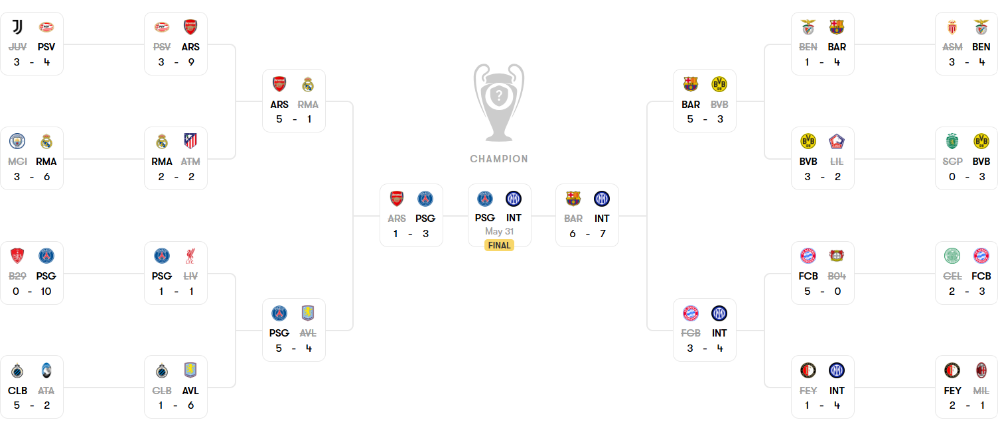
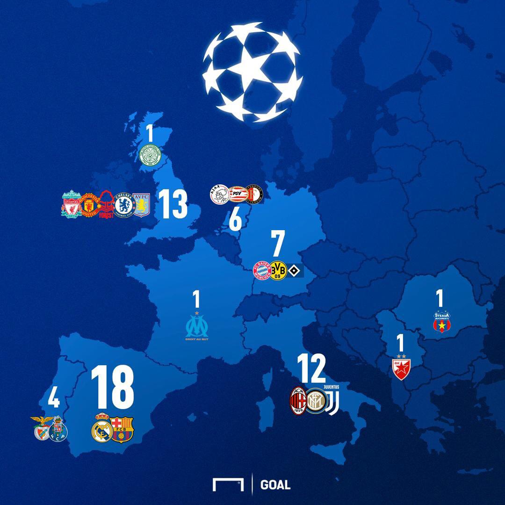

The UEFA Champions League is the premier club competition in European football. Since its birth in 1955 as the European Champion Clubs' Cup, it has evolved into the most prestigious club tournament in Europe, maybe even in the world. Top teams from all around Europe are invited to play. 81 teams in the 2024-2025 season got invited to play, but there is a large qualifying tournament before the real tournament even begins to decide 36 teams who will play in a 8 game long league phase. These games are decided randomly via a drawing. By the end of these 8 rounds of games, the top 8 teams automatically make it to the round of 16, while teams from 9th place to 24th place play in a “knockout phase playoffs”. Here teams play 2 legs against 1 team (one at each team’s home stadium) and whoever scores more goals on aggregate moves on to the round of 16. Once all these games are finished and all 16 teams are confirmed for the round of 16, another drawing takes place to determine the matchups. The remaining matchups all have 2 legs, and the losing teams get eliminated. The rounds go as follows: round of 16 -> quarter finals -> semi finals -> finale (which is only 1 single game at a neutral site). Currently this year’s tournament is almost over, and the finale is on 5/31/2025. View this year’s knockout bracket below:
The competition was rebranded to the UEFA Champions League in 1992, introducing a group stage format and significantly increasing its global audience. Legendary teams such as Real Madrid, AC Milan, and Barcelona have dominated various eras, with players like Cristiano Ronaldo and Lionel Messi becoming synonymous with the tournament's success.
Most Goals: Cristiano Ronaldo (141)
Most Assists: Cristiano Ronaldo (42)
Most Appearances: Cristiano Ronaldo (187)
Most Minutes Played: Iker Casillas (16267)
Most Titles: Real Madrid (15)
Most Red Cards: Sergio Ramos, Zlatan Ibrahimovic, Edgar Davids (4)
Spain: 18 England: 13 Italy: 12 Germany: 7 Netherlands: 6 Portugal: 4 Other: 4
| Year | Winner | Runner-Up |
|---|---|---|
| 2024 | Real Madrid | Borussia Dortmund |
| 2023 | Manchester City | Inter Milan |
| 2022 | Real Madrid | Liverpool |
| 2021 | Chelsea | Manchester City |
| 2020 | Bayern Munich | Paris Saint Germain |
| 2019 | Liverpool | Tottenham Hotspur |
| 2018 | Real Madrid | Liverpool |
| 2017 | Real Madrid | Juventus |
| 2016 | Real Madrid | Athletico Madrid |
| 2015 | Barcelona | Juventus |
| 2014 | Real Madrid | Athletico Madrid |
| 2013 | Bayern Munich | Borussia Dortmund |
| 2012 | Chelsea | Bayern Munich |
| 2011 | Barcelona | Manchester United |
| 2010 | Inter Milan | Bayern Munich |
| 2009 | Barcelona | Manchester United |
| 2008 | Manchester United | Chesea |
| 2007 | AC Milan | Liverpool |
| 2006 | Barcelona | Arsenal |
| 2005 | Liverpool | AC Milan |
| 2004 | Porto FC | Monaco |
| 2003 | AC Milan | Juventus |
| 2002 | Real Mardid | Bayer Leverkusen |
View this link to see the evolution of the match ball from 1999 to 2025: UEFA Champions League Balls.
Learn more by visiting the UEFA Official Champions League site.